Halloween is one of the most fun times of year to craft with your kids, and the best part is you need almost nothing to get started. 🎃 These paper Halloween crafts are made with basic supplies you probably already have at home: construction paper, scissors, glue, and a little imagination. Whether you have 15 minutes or a whole afternoon free, there is something on this list for every age and energy level.
What You'll Need
Most of these ideas use the same few basics, so one trip to your supply drawer covers almost everything on the list.
- Black construction paper, perfect for bats, cats, and spiders.
- Orange cardstock, great for pumpkins and trick-or-treat bags.
- Child-safe scissors, one pair per little crafter.
- Glue sticks, washable and easy to use for small hands.
- Self-adhesive googly eyes, the finishing touch on almost every idea here.
- White crayon or chalk marker, useful for drawing on dark paper.
- Tape, string, or ribbon for hanging finished crafts.
20 Paper Halloween Craft Ideas
1. Paper Bat Mobile
Cut bat shapes from black construction paper and add a pair of googly eyes to each one. Punch a small hole through the wings and thread a piece of string through, then hang several bats at different heights from a wooden dowel or a twig. This paper Halloween craft turns into a gorgeous spooky mobile that sways gently in any draft.
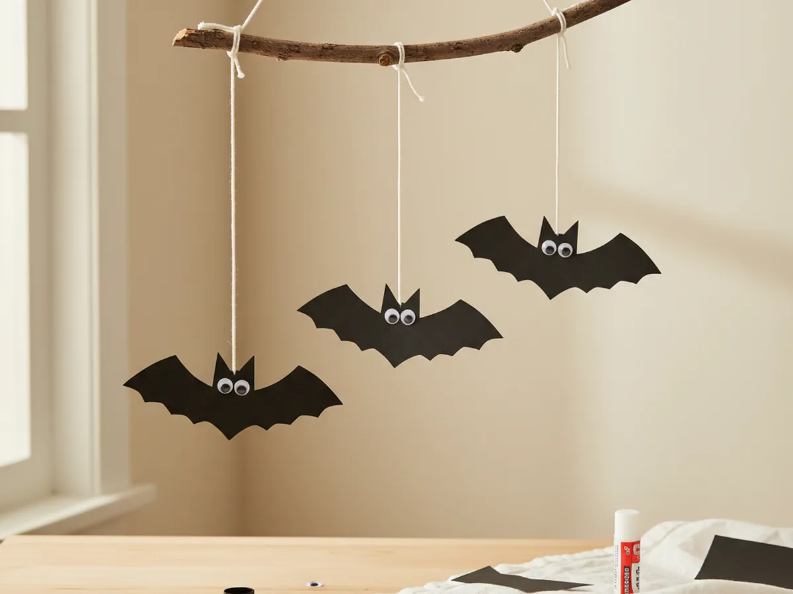
2. Paper Jack-o'-Lantern
Cut a large circle from orange cardstock and let your child draw or cut out a triangle nose, square eyes, and a jagged smile. Glue the pieces onto the face and add a short green stem at the top. Even the tiniest crafters can make a recognizable pumpkin face, and no two ever look the same.
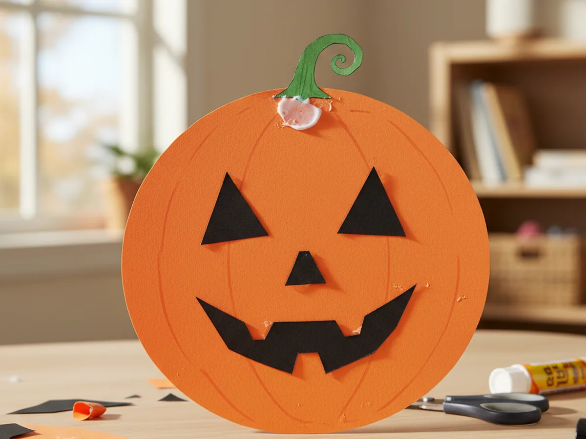
3. Paper Ghost Garland
Accordion-fold a long strip of white paper and draw a ghost shape on the top layer, making sure the folded edges are part of the arms. Cut through all layers at once, unfold, and you have a chain of connected ghosts ready to hang across a doorway. Easy Halloween paper crafts like this one take under 10 minutes and make a big impression.
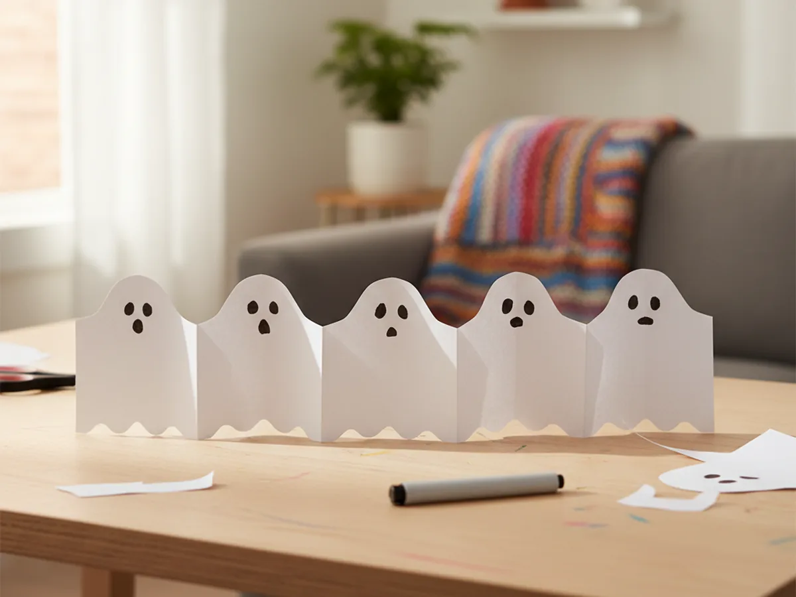
4. Paper Spider and Web
Cut a small circle from black paper for the spider body, add eight thin strips for legs, and stick on googly eyes. For the web, use white chalk marker to draw concentric circles connected by straight lines on a sheet of dark paper, then perch the spider in the middle. The contrast of white on black gives this one a really striking look.
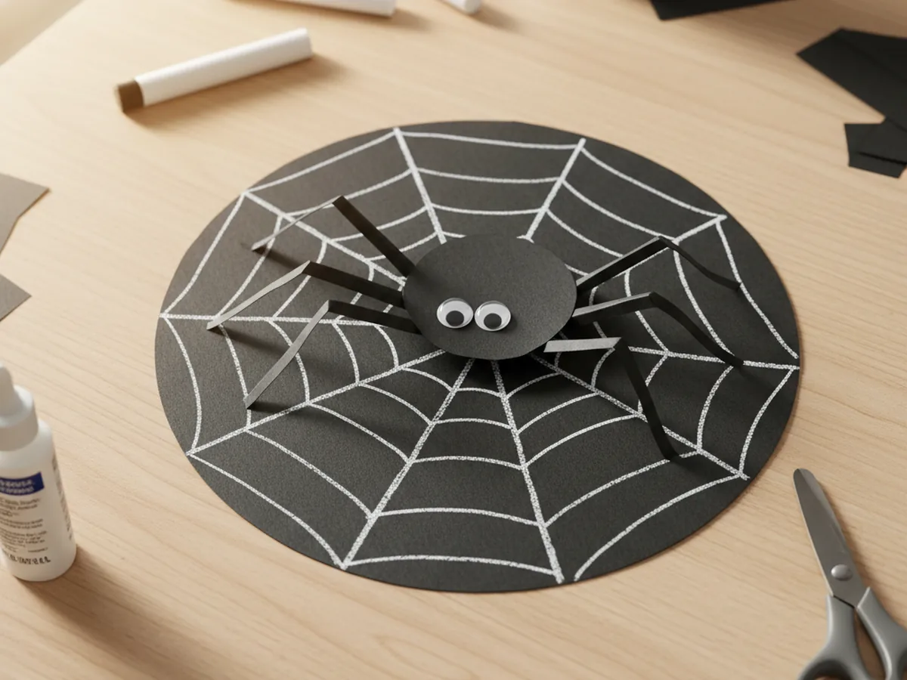
5. Paper Witch Hat
Roll a large piece of black cardstock into a cone and tape it closed. Cut a wide circle from another sheet for the brim, snip a hole in the center so the cone fits through, and glue everything together. Add a purple or orange paper band around the base of the cone for a finishing detail. Kids love wearing these while they work on the rest of the list.
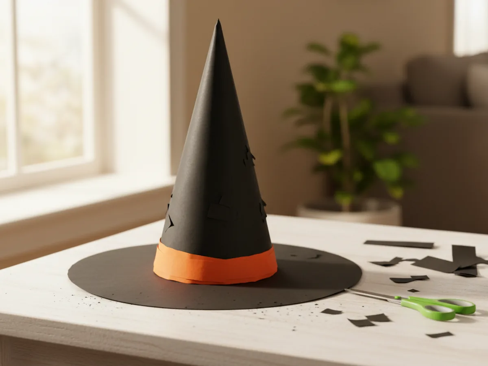
6. Paper Roll Mummy
Cut a strip of white paper into a long winding bandage, then wrap it loosely around a short paper tube made from a rolled rectangle. Glue the ends in place and add two googly eyes peeking out from the wrapping. These little mummies look adorable lined up on a windowsill and they are one of the quickest Halloween paper crafts for kids on the entire list.
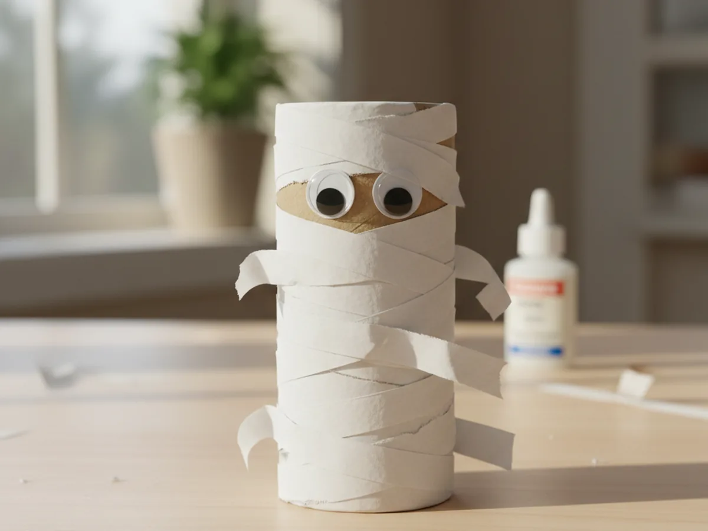
7. Paper Skeleton Collage
Cut white oval and rectangle shapes from paper to represent the skull, ribcage, arms, legs, and hands. Arrange and glue the pieces onto a black background, spacing them out to look like a full skeleton. This one works especially well as a learning activity for older kids who enjoy figuring out where each bone goes.
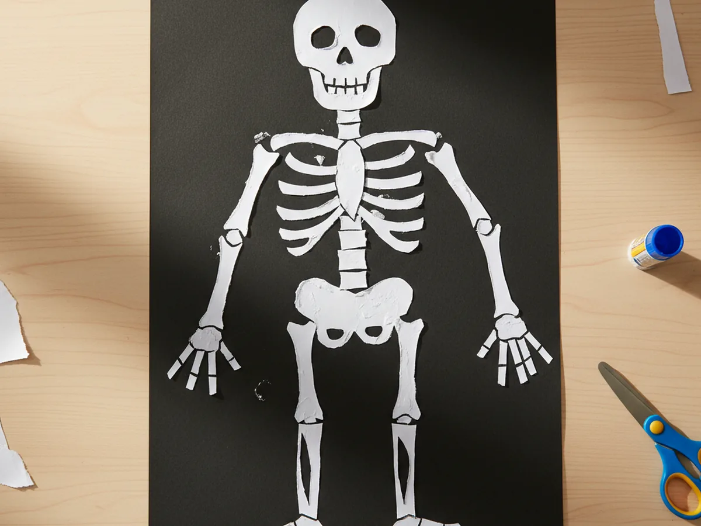
8. Paper Black Cat Silhouette
Trace a simple cat outline onto black construction paper, adding a curved tail and two pointy ears. Cut it out and glue it onto a large orange or yellow full moon circle cut from cardstock. The bold silhouette against the glowing moon color is one of those Halloween crafts with paper that looks much harder to make than it actually is.
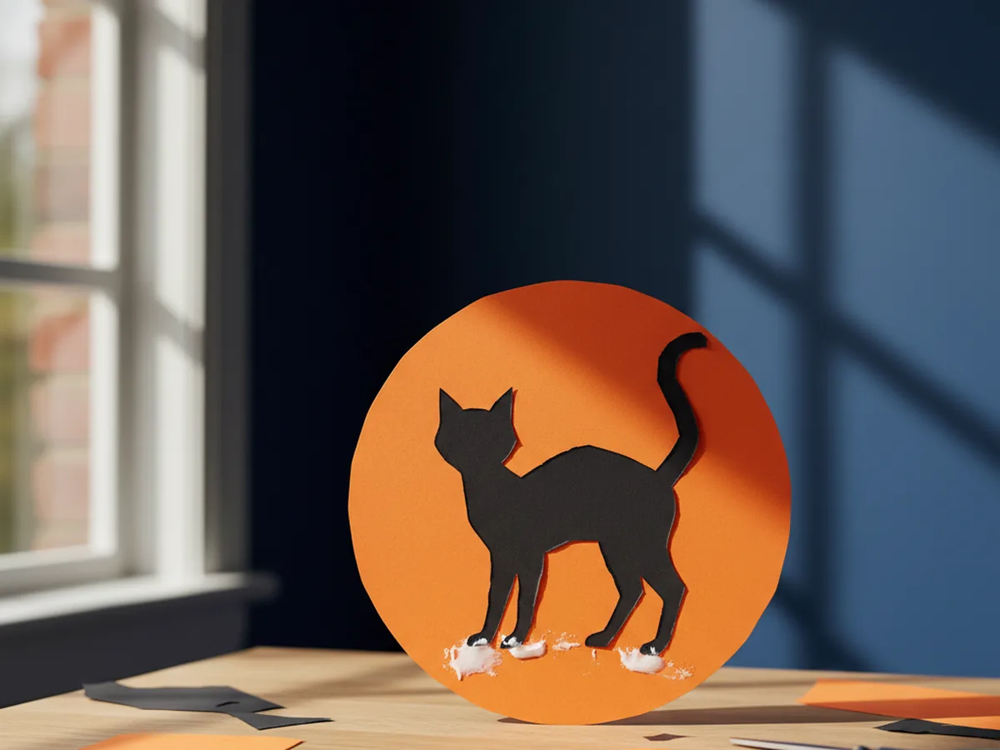
9. Paper Trick-or-Treat Bag
Fold a large piece of orange or black cardstock in half, glue or staple the two side edges closed, and punch two holes near the top. Thread a ribbon handle through the holes and tie knots to hold it. Let your child decorate the outside with marker drawings, stickers, or paper cutout shapes. It makes a sweet little gift bag too. 🕷️
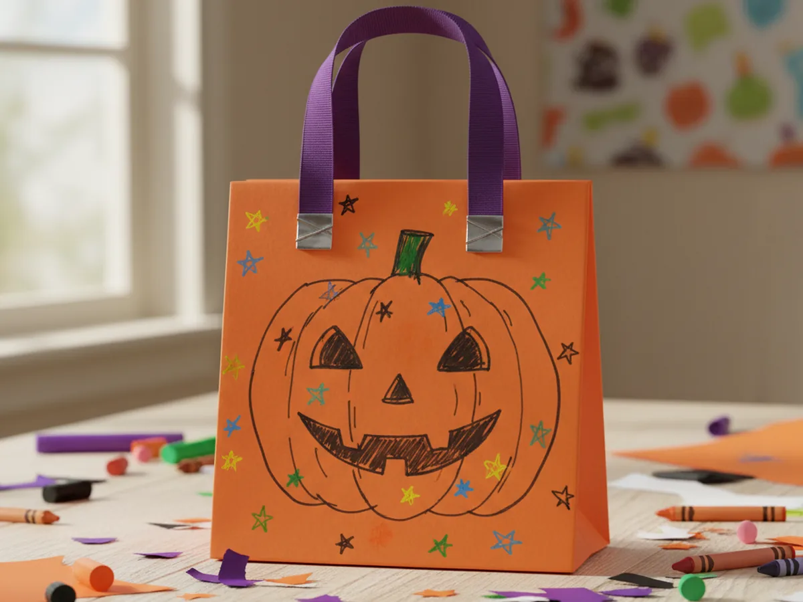
10. Origami Pumpkin
Start with a square of orange paper and follow simple origami fold steps to create a 3D pumpkin shape. Add a small green strip twisted into a curly stem and draw a face on the front. Origami pumpkins make beautiful table decorations and older kids tend to make several once they get the hang of the folds.
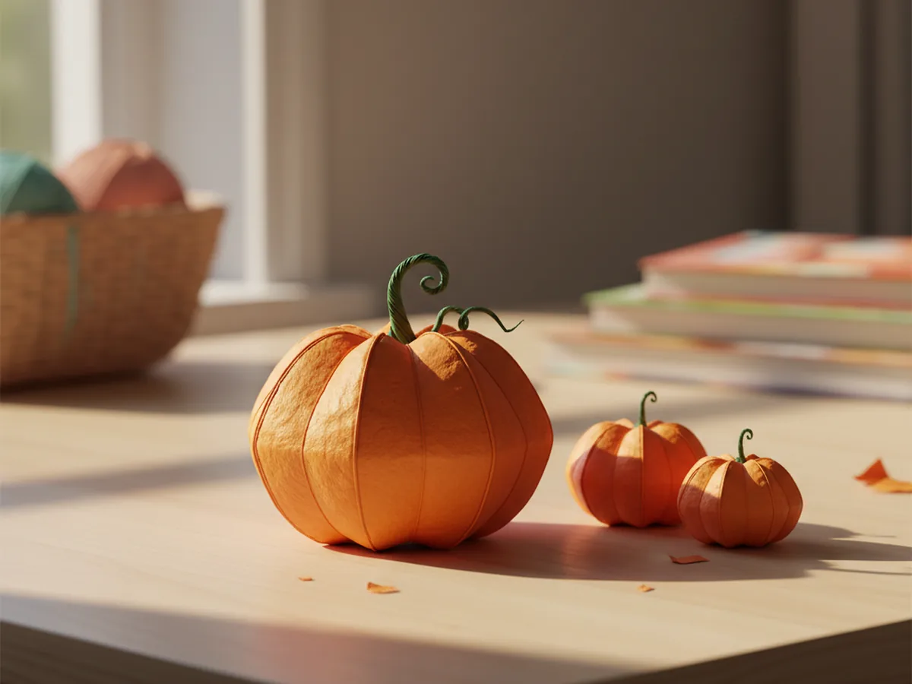
11. Paper Haunted House
Cut a large house shape from dark grey or black paper, then add yellow rectangle windows, a crooked moon, and small ghost shapes peeking from behind the roofline. Layer everything onto a black background and cut bare tree shapes from dark paper to frame the sides. The finished piece looks like a proper Halloween scene and children feel genuinely proud to display it.
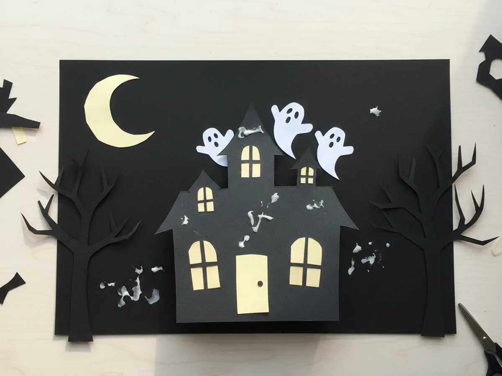
12. Paper Monster Bookmark
Cut a rectangle of green, purple, or blue paper, fold the top two corners down to meet in the middle, and glue a triangle of matching paper behind the fold to create a pocket. Slip it over the corner of a book page and decorate the front with googly eyes, teeth, and horns. Paper Halloween crafts for kids that are also genuinely useful are always a big hit.
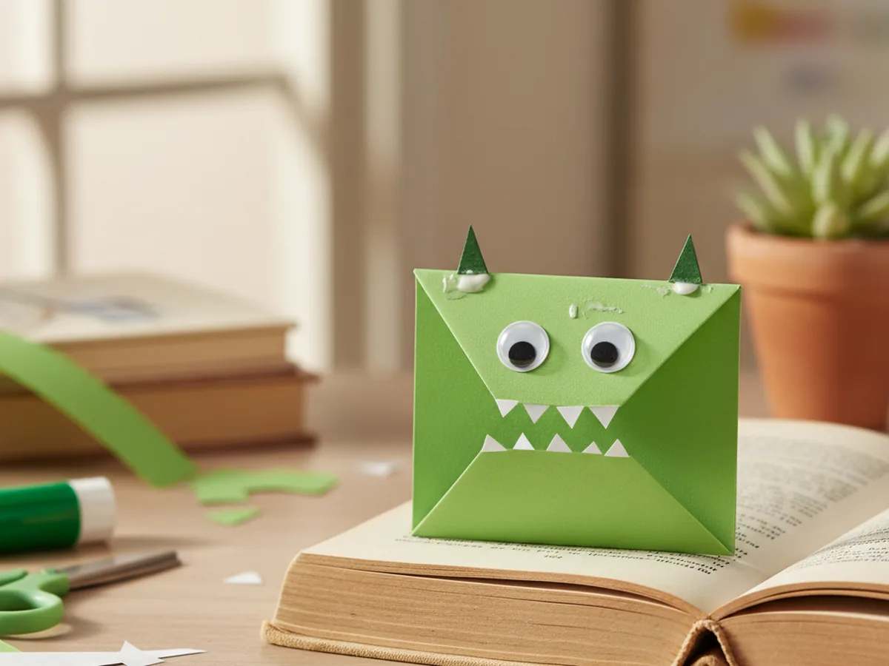
13. Paper Frankenstein
Cut a large rectangle for the head from light green paper, add two square neck bolts, a strip of black paper hair, and draw on stitches, heavy brows, and a flat grin. Stick two googly eyes above the nose and mount the face on a cardstock backing. This classic Halloween character translates beautifully into a simple paper collage even very young children can put together.
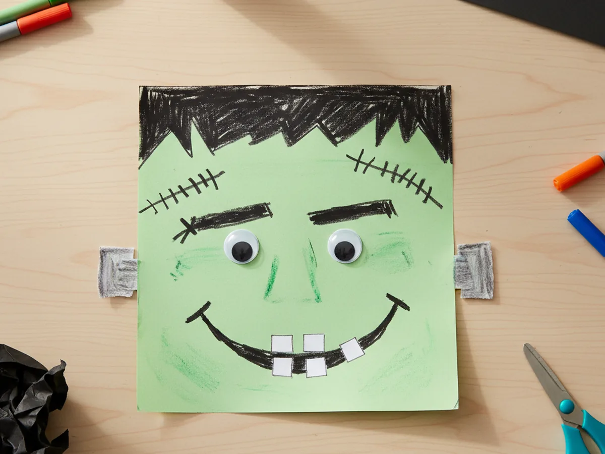
14. Paper Owl
Cut a large teardrop shape from brown or orange paper for the body, add two wide circle eyes, a small triangle beak, and accordion-folded wings from a contrasting color. Owls are a natural fit for autumn and Halloween themes, and this one can be displayed flat on a wall or stood upright by folding a small base tab at the bottom.
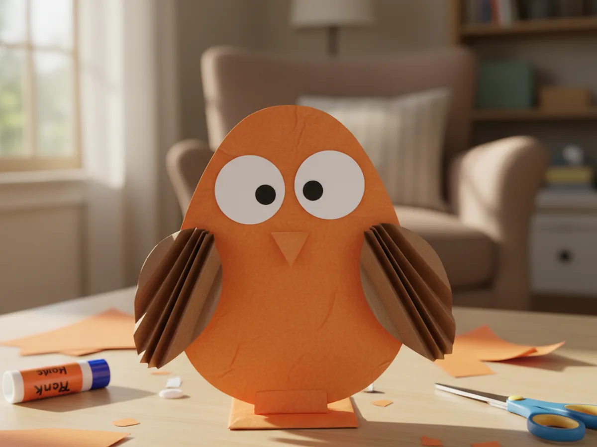
15. Paper Vampire Mask
Cut a wide oval mask shape from black cardstock, make two eye holes, and add a dramatic widow's peak hairline at the top. Glue on a white paper collar with a scalloped edge and draw on pale fangs at the bottom. Punch holes on each side and tie elastic or ribbon so your child can actually wear it. This is one of those simple paper Halloween crafts that doubles as a costume piece.
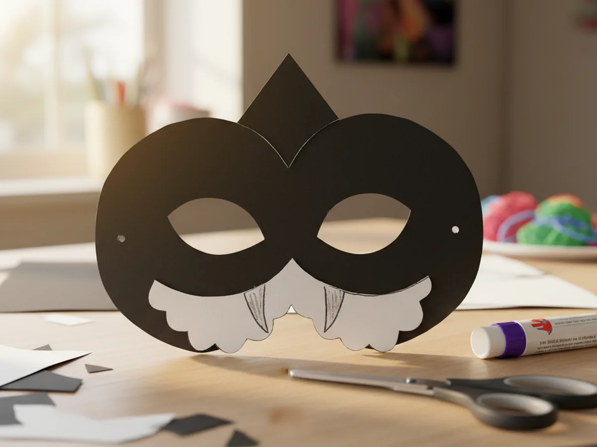
16. Paper Scarecrow
Build a scarecrow from layered paper shapes: a straw hat, a patchy shirt, ragged trouser shapes, and a stuffed-looking round head. Add straw-like yellow paper fringe poking out from the cuffs and hat brim. Mount it on a stick cut from brown paper for a charming autumn display the whole family will enjoy putting together. 🍂
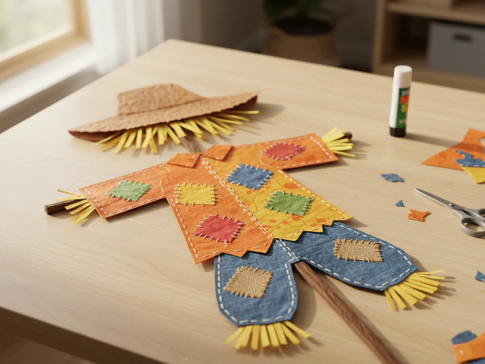
17. Paper Eyeball Wreath
Cut the center out of a paper plate or a large cardstock ring, then glue white paper circles all over the ring, each one decorated with a colored iris and a black pupil. The result is a ring covered in dozens of eyeballs staring back at anyone who comes to the door. Creepy and wonderful in equal measure, and kids absolutely love how it turns out.
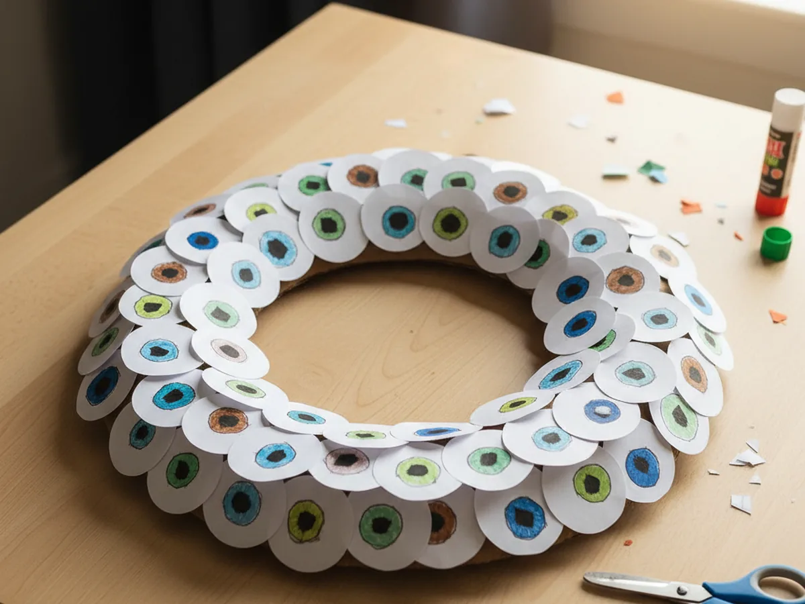
18. Paper Witch on a Broomstick
Draw a simple witch silhouette on black paper, including a pointy hat and a flowing cape, and cut it out. Attach a broomstick made from a brown paper stick with a fringe of yellow strips at one end. Hang the finished witch from a thread so she appears to fly through the air. Halloween paper crafts for toddlers and older kids can both be adapted from this one idea simply by adjusting how much cutting you pre-do.
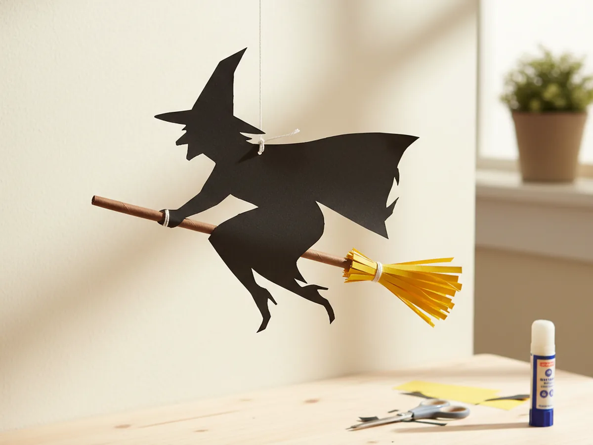
19. Paper Candy Corn
Cut three triangles in graduating sizes from white, orange, and yellow paper and stack them into the classic candy corn shape. Glue them together and either display them flat as wall decorations or thread several onto a garland. Toddlers can do the gluing once you pre-cut the pieces, making this the fastest easy paper Halloween craft on the whole list for very young children.
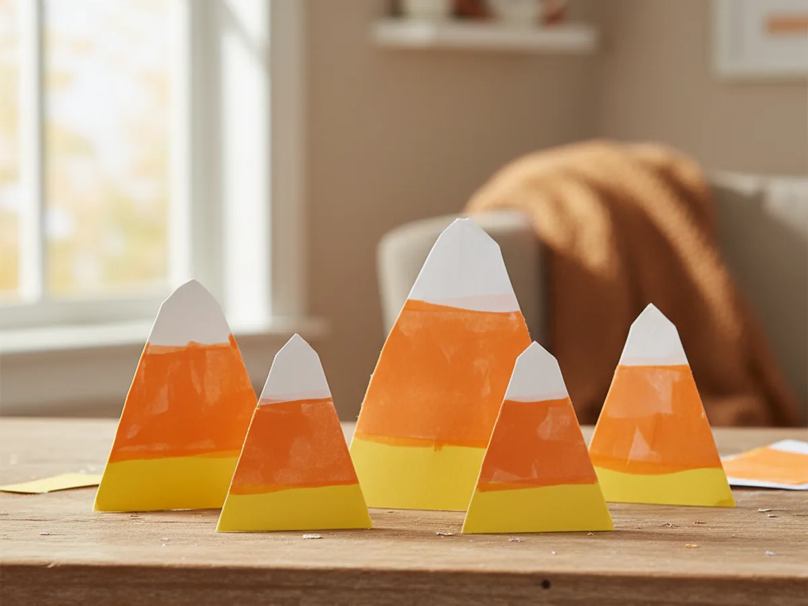
20. Paper Pumpkin Chain
Cut orange paper strips and loop them into rings, linking each one to make a chain just like a classic paper chain garland. Use black strips to add space between the pumpkins, then draw jack-o'-lantern faces directly onto the orange rings. String the finished chain across a mantel or window for an easy orange-and-black Halloween decoration that any age can help make.
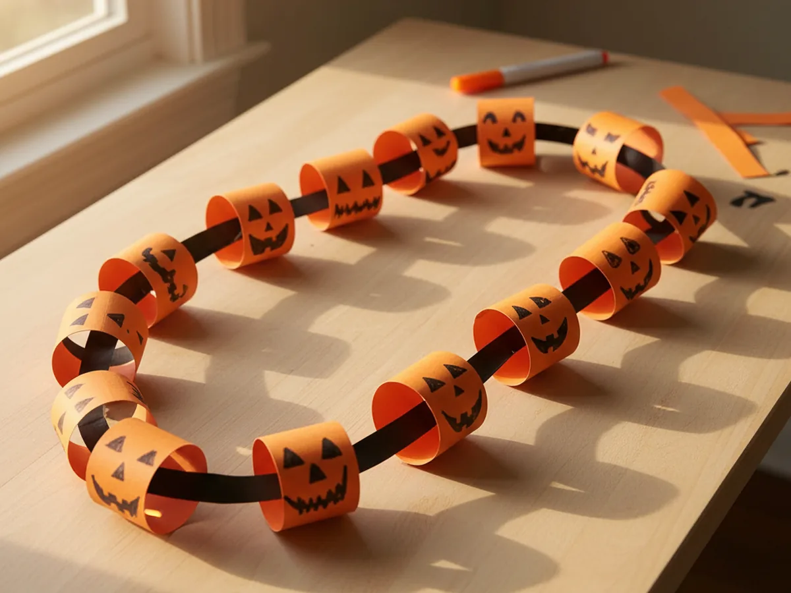
Final Thoughts
These paper Halloween crafts prove that the spookiest decorations do not need to come from a store. A stack of construction paper and an afternoon with your kids is honestly all it takes. Try one idea today or work through several together this season. Either way, we hope it brings some extra smiles and a little Halloween magic to your home.
More Crafts You'll Love
If your little ones are on a Halloween crafting roll, these two articles are perfect for your next creative session.
Pick one idea from this list, grab a few sheets of paper, and make something spooky together today. Happy Halloween crafting!